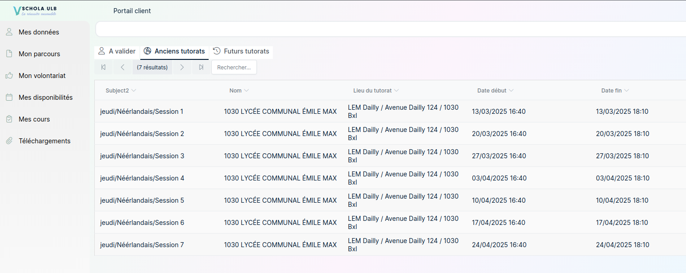

Présentation
Cette page présente plusieurs expériences personnelles qui m’ont permis de développer mes compétences en programmation, en apprentissage autonome et en pédagogie.
Jeu Sonic en 2D avec Python et Pygame
J’ai développé un jeu Sonic en 2D avec Python et la bibliothèque Pygame. J’ai conçu moi-même les niveaux à l’aide d’un tileset fourni et j’ai intégré les animations du personnage en découpant les sprites avec Photoshop.
J’ai également mis en place plusieurs éléments du gameplay, comme la gravité, les ennemis et les effets sonores. Ce projet m’a permis d’améliorer ma logique de programmation et d’appliquer de meilleures pratiques de développement, notamment en séparant le code en plusieurs classes et fichiers plutôt que de tout regrouper dans un seul script.
Réalisé sur environ deux semaines, ce projet a renforcé mes compétences en programmation et m’a donné une première expérience concrète en conception de jeu vidéo.
Formation Python sur FreeCodeCamp
J’ai suivi une formation Python sur FreeCodeCamp afin de consolider mes bases en programmation et de mieux comprendre les concepts fondamentaux du langage.
Au cours de cette formation, j’ai réalisé différents exercices pratiques portant sur les boucles, les fonctions, les classes, les méthodes, les listes, les dictionnaires et les conventions de codage. Chaque partie était accompagnée d’exercices, ce qui m’a permis d’appliquer directement les notions étudiées.
Cette formation m’a aidé à gagner en rigueur, à mieux structurer mon code et à renforcer ma confiance pour aborder des projets plus complets. Elle s’inscrit pleinement dans mon objectif professionnel de devenir développeur Python.

Tutorat avec le programme Schola ULB - 10h
Durant mon parcours à l’EPHEC, j’ai également donné des cours de soutien à des élèves du secondaire en néerlandais grâce au programme Schola ULB, qui propose un accompagnement scolaire dans différentes matières.
Bien que le néerlandais ne fasse pas partie de mon cursus principal, j’ai beaucoup travaillé cette langue en autodidacte, notamment en regardant des dessins animés doublés en néerlandais et en lisant des articles. Cette expérience m’a permis de mettre en pratique mes compétences linguistiques, mais aussi de développer mes qualités pédagogiques.
J’y ai appris qu’il existe une vraie différence entre apprendre pour soi-même et transmettre un savoir à quelqu’un d’autre. J’ai aussi compris qu’installer un bon climat de travail, encourager les élèves et reconnaître honnêtement ses limites lorsqu’on ne connaît pas immédiatement une réponse sont des éléments essentiels dans l’apprentissage. Cette expérience a été très enrichissante sur le plan humain et personnel.